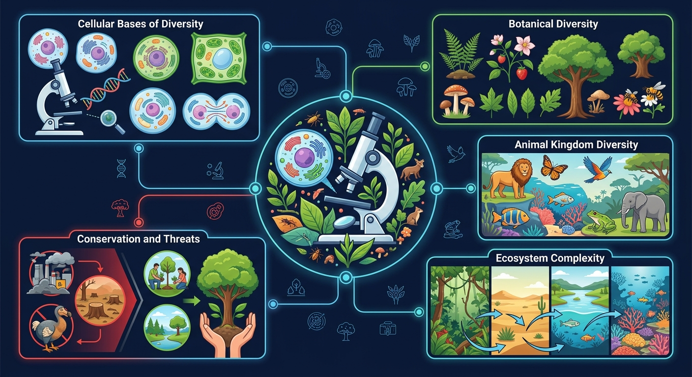

Interactive Canvas
生态系统稳定性模拟
点击添加或移除物种，观察食物网的稳定性如何变化。物种越少，系统越脆弱！
当前 8 个物种 · 稳定性：高 · 食物网连接：28条
地球上有数百万种生物，但物种正以前所未有的速度消失——我们该如何保护这份生命遗产？

选一个你关心的问题，后面的内容会围绕它展开。
选择或输入后，本课会围绕你的问题展开。
以下哪项最能体现"基因多样性"的含义？
已经知道：地球上有数百万种生物
但是问题是："多样性"具体指什么？只是种类多吗？
所以要解决：认识基因、物种、生态系统三层次
同种生物不同个体的基因组成不同。例：不同品种水稻的抗病基因不同。
地球上生物物种的丰富程度。目前已知约200万种，估计实际超1000万种。
生物群落与无机环境组成的多种生态系统。如森林、湿地、珊瑚礁、荒漠等。
某地引入一种外来植物用于绿化，以下分析最合理的是：
点击添加或移除物种，观察食物网的稳定性如何变化。物种越少，系统越脆弱！
对人类有直接使用价值：食物、药物、工业原料、科研材料等。
生态功能价值：调节气候、涵养水源、保持水土、净化空气等，远大于直接价值。
目前尚未被发现和利用的价值。大量物种的功能人类还不了解。
最主要原因。砍伐森林、围湖造田、城市扩张使物种失去生存环境。
引入的外来种缺乏天敌，大量繁殖挤占本地物种生存空间。如水葫芦。
过度捕捞、盗猎使许多物种数量急剧减少甚至灭绝。
水污染、大气污染、土壤污染破坏生物生存条件。
已经知道：生物多样性正受到严重威胁
但是问题是：怎样才能有效保护？
所以要掌握：就地保护、迁地保护、法律保护三大策略
建立自然保护区，保护生物及栖息地。中国已建超2700个自然保护区。
将濒危物种迁至动物园、植物园、基因库中保护和繁殖。如大熊猫繁殖基地。
制定法律法规禁止乱捕滥猎。如《野生动物保护法》《濒危野生动植物种国际贸易公约》。
某珍稀植物野外仅存20株且基因高度相似，最大的风险是：
错："保护就是不能利用"
对：合理利用也是保护方式之一
错："保护多样性只需保护大熊猫"
对：所有物种（含植物微生物）都要保护
错："外来种一定会入侵"
对：需科学评估，非都有害
错："生物多样性就是物种多"
对：含基因、物种、生态系统三层次
生物多样性是地球46亿年进化的结晶，一旦丧失不可逆转。
观察不同环境压力下物种如何适应和灭绝，理解自然选择与生物多样性的关系。
填空：保护生物多样性最有效的措施是建立____。
某地引入食人鲳后本地鱼类减少，分析原因并提出对策。
为你的学校设计一份"校园生物多样性调查与保护方案"，说明调查方法、保护建议和预期效果。